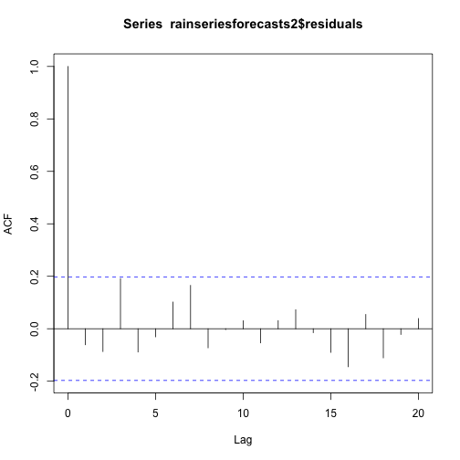

Time Series Data analysis
Time Series Data analysis
Read the data
kings <- scan("http://robjhyndman.com/tsdldata/misc/kings.dat",skip=3)
kings
## [1] 60 43 67 50 56 42 50 65 68 43 65 34 47 34 49 41 13 35 53 56 16 43 69
## [24] 59 48 59 86 55 68 51 33 49 67 77 81 67 71 81 68 70 77 56
Store in time series object
kingstimeseries <- ts(kings); kingstimeseries
## Time Series:
## Start = 1
## End = 42
## Frequency = 1
## [1] 60 43 67 50 56 42 50 65 68 43 65 34 47 34 49 41 13 35 53 56 16 43 69
## [24] 59 48 59 86 55 68 51 33 49 67 77 81 67 71 81 68 70 77 56
Data set of the number of births per month in New York city, from January 1946 to December 1959 (originally collected by Newton). This data is available in the file http://robjhyndman.com/tsdldata/data/nybirths.dat
births <- scan("http://robjhyndman.com/tsdldata/data/nybirths.dat")
birthstimeseries <- ts(births, frequency=12, start=c(1946,1))
birthstimeseries
## Jan Feb Mar Apr May Jun Jul Aug Sep Oct Nov Dec
## 1946 26.663 23.598 26.931 24.740 25.806 24.364 24.477 23.901 23.175 23.227 21.672 21.870
## 1947 21.439 21.089 23.709 21.669 21.752 20.761 23.479 23.824 23.105 23.110 21.759 22.073
## 1948 21.937 20.035 23.590 21.672 22.222 22.123 23.950 23.504 22.238 23.142 21.059 21.573
## 1949 21.548 20.000 22.424 20.615 21.761 22.874 24.104 23.748 23.262 22.907 21.519 22.025
## 1950 22.604 20.894 24.677 23.673 25.320 23.583 24.671 24.454 24.122 24.252 22.084 22.991
## 1951 23.287 23.049 25.076 24.037 24.430 24.667 26.451 25.618 25.014 25.110 22.964 23.981
## 1952 23.798 22.270 24.775 22.646 23.988 24.737 26.276 25.816 25.210 25.199 23.162 24.707
## 1953 24.364 22.644 25.565 24.062 25.431 24.635 27.009 26.606 26.268 26.462 25.246 25.180
## 1954 24.657 23.304 26.982 26.199 27.210 26.122 26.706 26.878 26.152 26.379 24.712 25.688
## 1955 24.990 24.239 26.721 23.475 24.767 26.219 28.361 28.599 27.914 27.784 25.693 26.881
## 1956 26.217 24.218 27.914 26.975 28.527 27.139 28.982 28.169 28.056 29.136 26.291 26.987
## 1957 26.589 24.848 27.543 26.896 28.878 27.390 28.065 28.141 29.048 28.484 26.634 27.735
## 1958 27.132 24.924 28.963 26.589 27.931 28.009 29.229 28.759 28.405 27.945 25.912 26.619
## 1959 26.076 25.286 27.660 25.951 26.398 25.565 28.865 30.000 29.261 29.012 26.992 27.897
The file http://robjhyndman.com/tsdldata/data/fancy.dat contains monthly sales for a souvenir shop at a beach resort town in Queensland, Australia, for January 1987-December 1993 (original data from Wheelwright and Hyndman, 1998).
souvenir <- scan("http://robjhyndman.com/tsdldata/data/fancy.dat")
souvenirtimeseries <- ts(souvenir, frequency=12, start=c(1987,1))
souvenirtimeseries
## Jan Feb Mar Apr May Jun Jul Aug Sep Oct Nov Dec
## 1987 1664.81 2397.53 2840.71 3547.29 3752.96 3714.74 4349.61 1987 3566.34 5021.82 6423.48 7600.60 19756.21
## 1988 2499.81 5198.24 7225.14 4806.03 5900.88 4951.34 6179.12 1988 4752.15 5496.43 5835.10 12600.08 28541.72
## 1989 4717.02 5702.63 9957.58 5304.78 6492.43 6630.80 7349.62 1989 8176.62 8573.17 9690.50 15151.84 34061.01
## 1990 5921.10 5814.58 12421.25 6369.77 7609.12 7224.75 8121.22 1990 7979.25 8093.06 8476.70 17914.66 30114.41
## 1991 4826.64 6470.23 9638.77 8821.17 8722.37 10209.48 11276.55 1991 12552.22 11637.39 13606.89 21822.11 45060.69
## 1992 7615.03 9849.69 14558.40 11587.33 9332.56 13082.09 16732.78 1992 19888.61 23933.38 25391.35 36024.80 80721.71
## 1993 10243.24 11266.88 21826.84 17357.33 15997.79 18601.53 26155.15 1993 28586.52 30505.41 30821.33 46634.38 104660.67
Plotting Time Series
plot.ts(kingstimeseries)
This time series could probably be described using an additive model, since the random fluctuations in the data are roughly constant in size over time.
Plot Birth Time Series
plot.ts(birthstimeseries)
There seems to be seasonal variation in the number of births per month: there is a peak every summer, and a trough every winter. Again, it seems that this time series could probably be described using an additive model, as the seasonal fluctuations are roughly constant in size over time and do not seem to depend on the level of the time series, and the random fluctuations also seem to be roughly constant in size over time.
Plot souvenir time series data
plot.ts(souvenirtimeseries)

an additive model is not appropriate for describing this time series, since the size of the seasonal fluctuations and random fluctuations seem to increase with the level of the time series. Thus, we may need to transform the time series in order to get a transformed time series that can be described using an additive model.
logsouvenirtimeseries <- log(souvenirtimeseries)
plot.ts(logsouvenirtimeseries)
The size of the seasonal fluctuations and random fluctuations in the log-transformed time series seem to be roughly constant over time, and do not depend on the level of the time series. Thus, the log- transformed time series can probably be described using an additive model.
Decomposing Time Series
Separating it into its constituent components, which are usually a trend component and an irregular component, and if it is a seasonal time series, a seasonal component.
Decomposing Non-Seasonal Data
A non-seasonal time series consists of a trend component and an irregular component.
To estimate the trend component of a non-seasonal time series that can be described using an additive model, it is common to use a smoothing method, such as calculating the simple moving average of the time series.
The time series of the age of death of 42 successive kings of England appears is non-seasonal, and can probably be described using an additive model, since the random fluctuations in the data are roughly constant in size over time:
par(mfrow=c(2,1))
plot.ts(kingstimeseries)
kingstimeseriesSMA3 <- SMA(kingstimeseries, n=3)
plot.ts(kingstimeseriesSMA3)
There still appears to be quite a lot of random fluctuations in the time series smoothed using a simple moving average of order 3. Thus, to estimate the trend component more accurately, we might want to try smoothing the data with a simple moving average of a higher order. This takes a little bit of trial-and-error, to find the right amount of smoothing. For example, we can try using a simple moving average of order 8:
par(mfrow=c(2,1))
plot.ts(kingstimeseries)
kingstimeseriesSMA3 <- SMA(kingstimeseries, n=8)
plot.ts(kingstimeseriesSMA3)
The data smoothed with a simple moving average of order 8 gives a clearer picture of the trend component, and we can see that the age of death of the English kings seems to have decreased from about 55 years old to about 38 years old during the reign of the first 20 kings, and then increased after that to about 73 years old by the end of the reign of the 40th king in the time series.
Decomposing Seasonal Data
A seasonal time series consists of a trend component, a seasonal component and an irregular component. Decom- posing the time series means separating the time series into these three components: that is, estimating these three components.
To estimate the trend component and seasonal component of a seasonal time series that can be described using an additive model, we can use the “decompose()” function in R. This function estimates the trend, seasonal, and irregular components of a time series that can be described using an additive model.
The function decompose() returns a list object as its result, where the estimates of the seasonal component, trend component and irregular component are stored in named elements of that list objects, called seasonal, trend, and random respectively.
For example, as discussed above, the time series of the number of births per month in New York city is seasonal with a peak every summer and trough every winter, and can probably be described using an additive model since the seasonal and random fluctuations seem to be roughly constant in size over time:
plot.ts(birthstimeseries)

To estimate the trend, seasonal and irregular components of this time series, we type:
birthstimeseriescomponents <- decompose(birthstimeseries)
The estimated values of the seasonal, trend and irregular components are now stored in variables birthstimeseriescomponents$seasonal, birthstimeseriescomponents$trend and birthstimeseriescomponents$random. For example, we can print out the estimated values of the seasonal component by typing:
birthstimeseriescomponents$seasonal
## Jan Feb Mar Apr May Jun Jul Aug Sep Oct Nov Dec
## 1946 -0.6771947 -2.0829607 0.8625232 -0.8016787 0.2516514 -0.1532556 1946 1.4560457 1.1645938 0.6916162 0.7752444 -1.1097652 -0.3768197
## 1947 -0.6771947 -2.0829607 0.8625232 -0.8016787 0.2516514 -0.1532556 1947 1.4560457 1.1645938 0.6916162 0.7752444 -1.1097652 -0.3768197
## 1948 -0.6771947 -2.0829607 0.8625232 -0.8016787 0.2516514 -0.1532556 1948 1.4560457 1.1645938 0.6916162 0.7752444 -1.1097652 -0.3768197
## 1949 -0.6771947 -2.0829607 0.8625232 -0.8016787 0.2516514 -0.1532556 1949 1.4560457 1.1645938 0.6916162 0.7752444 -1.1097652 -0.3768197
## 1950 -0.6771947 -2.0829607 0.8625232 -0.8016787 0.2516514 -0.1532556 1950 1.4560457 1.1645938 0.6916162 0.7752444 -1.1097652 -0.3768197
## 1951 -0.6771947 -2.0829607 0.8625232 -0.8016787 0.2516514 -0.1532556 1951 1.4560457 1.1645938 0.6916162 0.7752444 -1.1097652 -0.3768197
## 1952 -0.6771947 -2.0829607 0.8625232 -0.8016787 0.2516514 -0.1532556 1952 1.4560457 1.1645938 0.6916162 0.7752444 -1.1097652 -0.3768197
## 1953 -0.6771947 -2.0829607 0.8625232 -0.8016787 0.2516514 -0.1532556 1953 1.4560457 1.1645938 0.6916162 0.7752444 -1.1097652 -0.3768197
## 1954 -0.6771947 -2.0829607 0.8625232 -0.8016787 0.2516514 -0.1532556 1954 1.4560457 1.1645938 0.6916162 0.7752444 -1.1097652 -0.3768197
## 1955 -0.6771947 -2.0829607 0.8625232 -0.8016787 0.2516514 -0.1532556 1955 1.4560457 1.1645938 0.6916162 0.7752444 -1.1097652 -0.3768197
## 1956 -0.6771947 -2.0829607 0.8625232 -0.8016787 0.2516514 -0.1532556 1956 1.4560457 1.1645938 0.6916162 0.7752444 -1.1097652 -0.3768197
## 1957 -0.6771947 -2.0829607 0.8625232 -0.8016787 0.2516514 -0.1532556 1957 1.4560457 1.1645938 0.6916162 0.7752444 -1.1097652 -0.3768197
## 1958 -0.6771947 -2.0829607 0.8625232 -0.8016787 0.2516514 -0.1532556 1958 1.4560457 1.1645938 0.6916162 0.7752444 -1.1097652 -0.3768197
## 1959 -0.6771947 -2.0829607 0.8625232 -0.8016787 0.2516514 -0.1532556 1959 1.4560457 1.1645938 0.6916162 0.7752444 -1.1097652 -0.3768197
The estimated seasonal factors are given for the months January-December, and are the same for each year. The largest seasonal factor is for July (about 1.46), and the lowest is for February (about -2.08), indicating that there seems to be a peak in births in July and a trough in births in February each year.
We can plot the estimated trend, seasonal, and irregular components of the time series by using the “plot()” function, for example:
plot(birthstimeseriescomponents)
We see that the estimated trend component shows a small decrease from about 24 in 1947 to about 22 in 1948, followed by a steady increase from then on to about 27 in 1959.
Seasonality Adjusting
If you have a seasonal time series that can be described using an additive model, you can seasonally adjust the time series by estimating the seasonal component, and subtracting the estimated seasonal component from the original time series.
For example, to seasonally adjust the time series of the number of births per month in New York city, we can estimate the seasonal component using “decompose()”, and then subtract the seasonal component from the original time series:
birthstimeseriescomponents <- decompose(birthstimeseries)
birthstimeseriesseasonallyadjusted <- birthstimeseries - birthstimeseriescomponents$seasonal
par(mfrow=c(3,1))
plot(birthstimeseries)
plot(birthstimeseriescomponents$seasonal)
plot(birthstimeseriesseasonallyadjusted)
You can see that the seasonal variation has been removed from the seasonally adjusted time series. The seasonally adjusted time series now just contains the trend component and an irregular component.
Forecasts using Exponential Smoothing
Exponential smoothing can be used to make short-term forecasts for time series data.
Simple Exponential Smoothing
If you have a time series that can be described using an additive model with constant level and no seasonality, you can use simple exponential smoothing to make short-term forecasts.
The simple exponential smoothing method provides a way of estimating the level at the current time point. Smoothing is controlled by the parameter alpha; for the estimate of the level at the current time point. The value of alpha; lies between 0 and 1. Values of alpha that are close to 0 mean that little weight is placed on the most recent observations when making forecasts of future values.
For example, the file http://robjhyndman.com/tsdldata/hurst/precip1.dat contains total annual rainfall in inches for London, from 1813-1912 (original data from Hipel and McLeod, 1994). We can read the data into R and plot it by typing:
rain <- scan("http://robjhyndman.com/tsdldata/hurst/precip1.dat",skip=1)
rainseries <- ts(rain,start=c(1813))
plot.ts(rainseries)
You can see from the plot that there is roughly constant level (the mean stays constant at about 25 inches). The random fluctuations in the time series seem to be roughly constant in size over time, so it is probably appropriate to describe the data using an additive model. Thus, we can make forecasts using simple exponential smoothing.
To make forecasts using simple exponential smoothing in R, we can fit a simple exponential smoothing predictive model using the “HoltWinters()” function in R. To use HoltWinters() for simple exponential smoothing, we need to set the parameters beta=FALSE and gamma=FALSE in the HoltWinters() function (the beta and gamma parameters are used for Holt’s exponential smoothing, or Holt-Winters exponential smoothing, as described below).
The HoltWinters() function returns a list variable, that contains several named elements.
For example, to use simple exponential smoothing to make forecasts for the time series of annual rainfall in London, we type
rainseriesforecasts <- HoltWinters(rainseries, beta=FALSE, gamma=FALSE)
rainseriesforecasts
## Holt-Winters exponential smoothing without trend and without seasonal component.
##
## Call:
## HoltWinters(x = rainseries, beta = FALSE, gamma = FALSE)
##
## Smoothing parameters:
## alpha: 0.02412151
## beta : FALSE
## gamma: FALSE
##
## Coefficients:
## [,1]
## a 24.67819
The output of HoltWinters() tells us that the estimated value of the alpha parameter is about 0.024. This is very close to zero, telling us that the forecasts are based on both recent and less recent observations (although somewhat more weight is placed on recent observations).
By default, HoltWinters() just makes forecasts for the same time period covered by our original time series. In this case, our original time series included rainfall for London from 1813-1912, so the forecasts are also for 1813-1912.
In the example above, we have stored the output of the HoltWinters() function in the list variable “rainseriesforecasts”. The forecasts made by HoltWinters() are stored in a named element of this list variable called “fitted”, so we can get their values by typing:
rainseriesforecasts$fitted
## Time Series:
## Start = 1814
## End = 1912
## Frequency = 1
## xhat level
## 1814 23.56000 23.56000
## 1815 23.62054 23.62054
## 1816 23.57808 23.57808
## 1817 23.76290 23.76290
## 1818 23.76017 23.76017
## 1819 23.76306 23.76306
## 1820 23.82691 23.82691
## 1821 23.79900 23.79900
## 1822 23.98935 23.98935
## 1823 23.98623 23.98623
## 1824 23.98921 23.98921
## 1825 24.19282 24.19282
## 1826 24.17032 24.17032
## 1827 24.13171 24.13171
## 1828 24.10442 24.10442
## 1829 24.19549 24.19549
## 1830 24.22261 24.22261
## 1831 24.24329 24.24329
## 1832 24.32812 24.32812
## 1833 24.21938 24.21938
## 1834 24.23290 24.23290
## 1835 24.13369 24.13369
## 1836 24.13867 24.13867
## 1837 24.21782 24.21782
## 1838 24.10257 24.10257
## 1839 24.04293 24.04293
## 1840 24.12608 24.12608
## 1841 24.01280 24.01280
## 1842 24.18448 24.18448
## 1843 24.15808 24.15808
## 1844 24.19889 24.19889
## 1845 24.16153 24.16153
## 1846 24.12748 24.12748
## 1847 24.18133 24.18133
## 1848 24.02499 24.02499
## 1849 24.16454 24.16454
## 1850 24.13476 24.13476
## 1851 24.01621 24.01621
## 1852 23.93453 23.93453
## 1853 24.20964 24.20964
## 1854 24.25018 24.25018
## 1855 24.11509 24.11509
## 1856 24.08964 24.08964
## 1857 24.04430 24.04430
## 1858 23.99933 23.99933
## 1859 23.87319 23.87319
## 1860 23.97780 23.97780
## 1861 24.17710 24.17710
## 1862 24.13110 24.13110
## 1863 24.21405 24.21405
## 1864 24.15075 24.15075
## 1865 23.97658 23.97658
## 1866 24.10933 24.10933
## 1867 24.29001 24.29001
## 1868 24.33729 24.33729
## 1869 24.31468 24.31468
## 1870 24.34134 24.34134
## 1871 24.26847 24.26847
## 1872 24.28659 24.28659
## 1873 24.51752 24.51752
## 1874 24.47295 24.47295
## 1875 24.33660 24.33660
## 1876 24.43558 24.43558
## 1877 24.47717 24.47717
## 1878 24.56625 24.56625
## 1879 24.79573 24.79573
## 1880 25.01341 25.01341
## 1881 25.14045 25.14045
## 1882 25.20750 25.20750
## 1883 25.25411 25.25411
## 1884 25.23351 25.23351
## 1885 25.11571 25.11571
## 1886 25.15248 25.15248
## 1887 25.19729 25.19729
## 1888 25.05286 25.05286
## 1889 25.11768 25.11768
## 1890 25.08710 25.08710
## 1891 24.99407 24.99407
## 1892 25.07019 25.07019
## 1893 25.01085 25.01085
## 1894 24.88515 24.88515
## 1895 24.95884 24.95884
## 1896 24.87469 24.87469
## 1897 24.84201 24.84201
## 1898 24.79420 24.79420
## 1899 24.62284 24.62284
## 1900 24.57259 24.57259
## 1901 24.54141 24.54141
## 1902 24.48421 24.48421
## 1903 24.39631 24.39631
## 1904 24.72686 24.72686
## 1905 24.62852 24.62852
## 1906 24.58852 24.58852
## 1907 24.58059 24.58059
## 1908 24.54271 24.54271
## 1909 24.52166 24.52166
## 1910 24.57541 24.57541
## 1911 24.59433 24.59433
## 1912 24.59905 24.59905
We can plot the original time series against the forecasts by typing:
plot(rainseriesforecasts)

The plot shows the original time series in black, and the forecasts as a red line. The time series of forecasts is much smoother than the time series of the original data here.
As a measure of the accuracy of the forecasts, we can calculate the sum of squared errors for the in-sample forecast errors, that is, the forecast errors for the time period covered by our original time series. The sum-of-squared-errors is stored in a named element of the list variable “rainseriesforecasts” called “SSE”, so we can get its value by typing:
rainseriesforecasts$SSE
## [1] 1828.855
It is common in simple exponential smoothing to use the first value in the time series as the initial value for the level. For example, in the time series for rainfall in London, the first value is 23.56 (inches) for rainfall in 1813. You can specify the initial value for the level in the HoltWinters() function by using the “l.start” parameter. For example, to make forecasts with the initial value of the level set to 23.56, we type:
HoltWinters(rainseries, beta=FALSE, gamma=FALSE, l.start=23.56)
## Holt-Winters exponential smoothing without trend and without seasonal component.
##
## Call:
## HoltWinters(x = rainseries, beta = FALSE, gamma = FALSE, l.start = 23.56)
##
## Smoothing parameters:
## alpha: 0.02412151
## beta : FALSE
## gamma: FALSE
##
## Coefficients:
## [,1]
## a 24.67819
As explained above, by default HoltWinters() just makes forecasts for the time period covered by the original data, which is 1813-1912 for the rainfall time series. We can make forecasts for further time points by using the “forecast.HoltWinters()” function in the R “forecast” package. To use the forecast.HoltWinters() function, we first need to install the “forecast” R package
library("forecast")
When using the forecast.HoltWinters() function, as its first argument (input), you pass it the predictive model that you have already fitted using the HoltWinters() function. For example, in the case of the rainfall time series, we stored the predictive model made using HoltWinters() in the variable “rainseriesforecasts”. You specify how many further time points you want to make forecasts for by using the “h” parameter in forecast.HoltWinters(). For example, to make a forecast of rainfall for the years 1814-1820 (8 more years) using forecast.HoltWinters(), we type:
rainseriesforecasts2 <- forecast.HoltWinters(rainseriesforecasts, h=8)
rainseriesforecasts2
## Point Forecast Lo 80 Hi 80 Lo 95 Hi 95
## 1913 24.67819 19.17493 30.18145 16.26169 33.09470
## 1914 24.67819 19.17333 30.18305 16.25924 33.09715
## 1915 24.67819 19.17173 30.18465 16.25679 33.09960
## 1916 24.67819 19.17013 30.18625 16.25434 33.10204
## 1917 24.67819 19.16853 30.18785 16.25190 33.10449
## 1918 24.67819 19.16694 30.18945 16.24945 33.10694
## 1919 24.67819 19.16534 30.19105 16.24701 33.10938
## 1920 24.67819 19.16374 30.19265 16.24456 33.11182
The forecast.HoltWinters() function gives you the forecast for a year, a 80% prediction interval for the forecast, and a 95% prediction interval for the forecast. For example, the forecasted rainfall for 1920 is about 24.68 inches, with a 95% prediction interval of (16.24, 33.11).
To plot the predictions made by forecast.HoltWinters(), we can use the “plot.forecast()” function:
plot.forecast(rainseriesforecasts2)

The ‘forecast errors’ are calculated as the observed values minus predicted values, for each time point. We can only calculate the forecast errors for the time period covered by our original time series, which is 1813-1912 for the rainfall data. As mentioned above, one measure of the accuracy of the predictive model is the sum-of-squared- errors (SSE) for the in-sample forecast errors.
The in-sample forecast errors are stored in the named element “residuals” of the list variable returned by forecast.HoltWinters(). If the predictive model cannot be improved upon, there should be no correlations between forecast errors for successive predictions. In other words, if there are correlations between forecast errors for successive predictions, it is likely that the simple exponential smoothing forecasts could be improved upon by another forecasting technique.
To figure out whether this is the case, we can obtain a correlogra m of the in-sample forecast errors for lags 1-20. We can calculate a correlogram of the forecast errors using the “acf()” function in R. To specify the maximum lag that we want to look at, we use the “lag.max” parameter in acf().
For example, to calculate a correlogram of the in-sample forecast errors for the London rainfall data for lags 1-20, we type:
acf(rainseriesforecasts2$residuals, lag.max=20)

rm(list = ls())